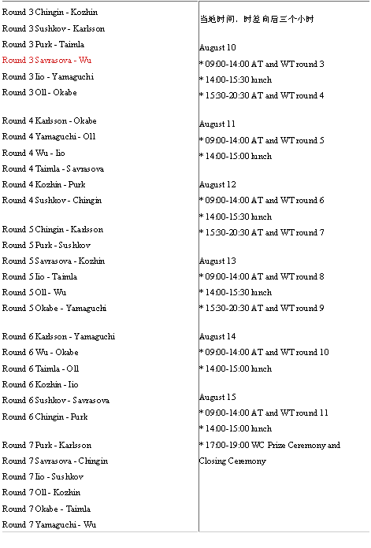

AT后几轮对阵表
首页
五子棋新闻
#1 AT后几轮对阵表 作者：有志青年 发表时间：2007-8-10 11:56:22
QT吴镝在俄罗斯美女尤丽娅阵前称臣，第三轮AT将再度审视美女，让人们关注“英雄”能否闯过美人关？！：）AT后轮对阵

#2 Re:AT后几轮对阵表 作者：无尽 发表时间：2007-8-10 12:41:16
Round 3 Chingin - Kozhin
Round 3 Sushkov - Karlsson
Round 3 Purk - Taimla
Round 3 Savrasova - Wu
Round 3 Iio - Yamaguchi
Round 3 Oll - Okabe
Round 4 Karlsson - Okabe
Round 4 Yamaguchi - Oll
Round 4 Wu - Iio
Round 4 Taimla - Savrasova
Round 4 Kozhin - Purk
Round 4 Sushkov - Chingin
Round 5 Chingin - Karlsson
Round 5 Purk - Sushkov
Round 5 Savrasova - Kozhin
Round 5 Iio - Taimla
Round 5 Oll - Wu
Round 5 Okabe - Yamaguchi
Round 6 Karlsson - Yamaguchi
Round 6 Wu - Okabe
Round 6 Taimla - Oll
Round 6 Kozhin - Iio
Round 6 Sushkov - Savrasova
Round 6 Chingin - Purk
Round 7 Purk - Karlsson
Round 7 Savrasova - Chingin
Round 7 Iio - Sushkov
Round 7 Oll - Kozhin
Round 7 Okabe - Taimla
Round 7 Yamaguchi - Wu
Round 8 Karlsson - Wu
Round 8 Taimla - Yamaguchi
Round 8 Kozhin - Okabe
Round 8 Sushkov - Oll
Round 8 Chingin - Iio
Round 8 Purk - Savrasova
Round 9 Savrasova - Karlsson
Round 9 Iio - Purk
Round 9 Oll - Chingin
Round 9 Okabe - Sushkov
Round 9 Yamaguchi - Kozhin
Round 9 Wu - Taimla
Round 10 Karlsson - Taimla
Round 10 Kozhin - Wu
Round 10 Sushkov - Yamaguchi
Round 10 Chingin - Okabe
Round 10 Purk - Oll
Round 10 Savrasova - Iio
Round 11 Iio - Karlsson
Round 11 Oll - Savrasova
Round 11 Okabe - Purk
Round 11 Yamaguchi - Chingin
Round 11 Wu - Sushkov
Round 11 Taimla - Kozhin
#3 Re:AT后几轮对阵表 作者：月明竹青曲悠 发表时间：2007-8-10 12:54:06
小吴又输了？那就连败两场了哦，晕